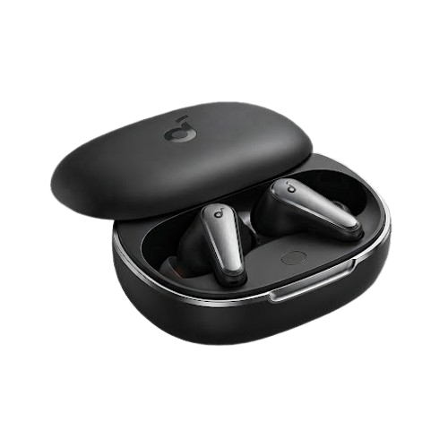

graphic_eq
Liberty
Bağlı değil
Cihazını Bağla
Bağlanmak istediğin Liberty 5 cihazını seç.

headphones
Soundcore Liberty 5
Ready to pair
Bağlanmak istediğin Liberty 5 cihazını seç.

Soundcore Liberty 5
Ready to pair